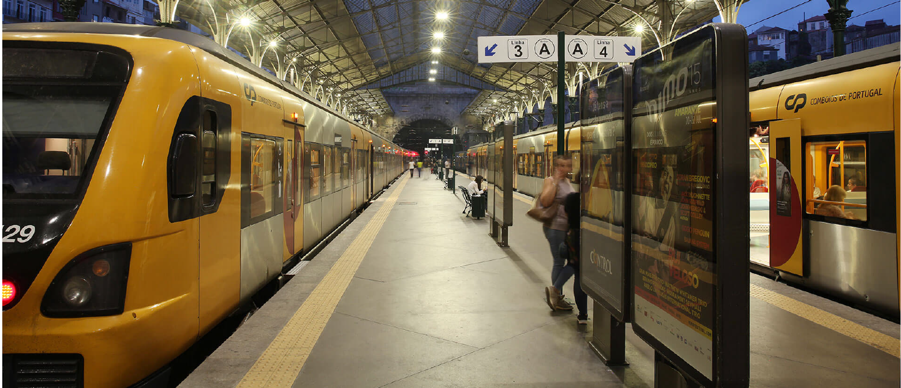

TRAVELING BY TRAIN
Student travel product
There is one thing that can be very useful to know before you're going to travel by train, or with any other travel options. And that thing is: traveling with public transportation is free! There is a website that explains in a few steps how to arrange it. Visit:
www.ov-chipkaart.nlSprinter and Intercity
There are two types of trains. You can travel with the Sprinter or the Intercity. The Sprinter usually takes more stops at stations and the Intercity uses less. Not only is the Intercity faster, but it's also bigger. There is an upper floor so there is more room in the train.
Station Amsterdam Centraal
Every station has platforms, some may have more than others. It depends on the city and the station. Since you are going to study in Amsterdam, we're going to use Amsterdam Central as example. Amsterdam Central has six platforms and eleven railways. From here, there are always multiple travel options you can take. You can use the subway or the tram to get you to other places in Amsterdam. You can take the free ferry to get you to the other side or rent a bicycle if you prefer biking.
Back to travel options